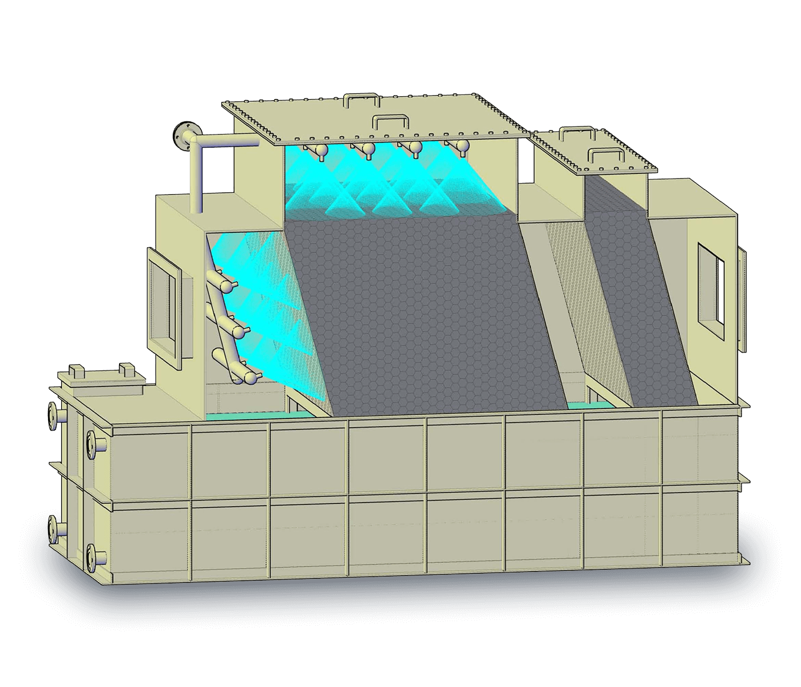
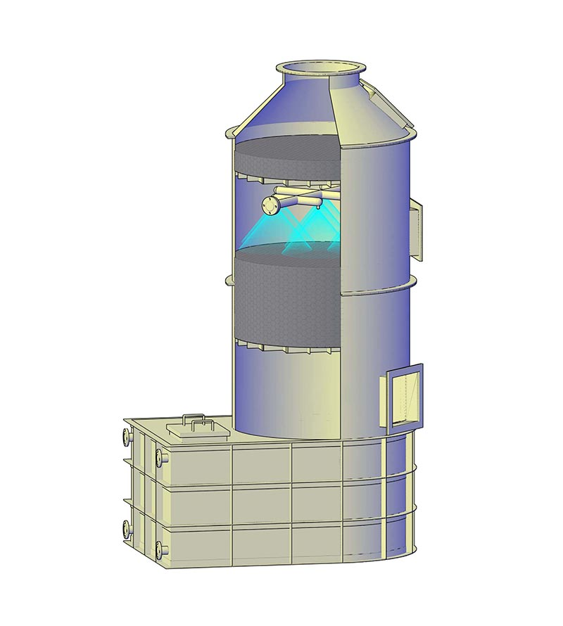
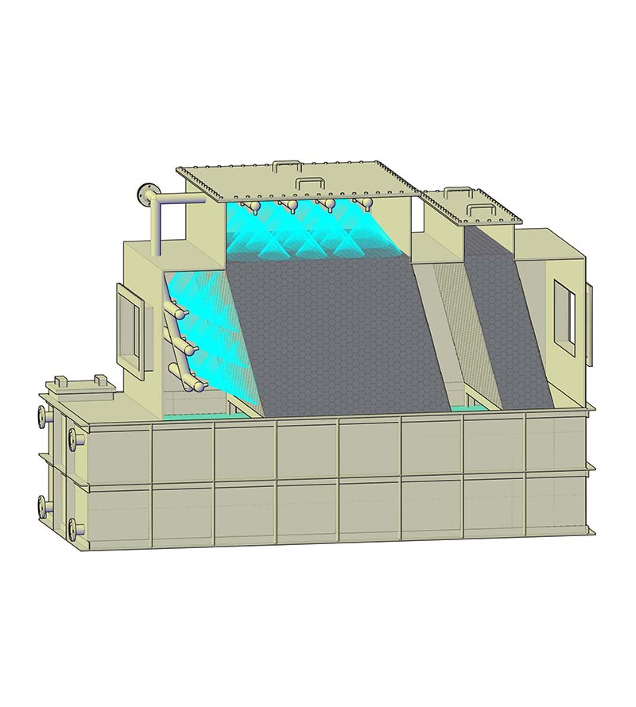

濕式充填吸收塔
Packed Tower Scrubber
- 酸鹼氣體中和吸收、有害氣體及臭氣吸收、微細煙霧物理吸收

用途
酸鹼氣體中和吸收、有害氣體及臭氣吸收、微細煙霧物理吸收
說明
- 標準充填深度：1000mm
- 本體形狀：方形、圓形
- 本體材質：SS、SUS、PVC、PP、FRP
- 充填材質：SUS、PP
- 選用配件：風機、泵浦、加藥裝置
- 廢氣出入口、循環水出入口、溢流口、排水口、供水口之方向及尺寸依指定開設。(以保養孔為正面)
- 請確認塔入口之靜壓值，以免液位變動
Model List
機型一覽
- 
- TPT-Y型
- 
- TPT-X型
規格表
| 型式TPT | 形狀 | 尺寸A | 尺寸B | 尺寸L | 貯水量(L) |
|---|---|---|---|---|---|
| 型式TPT | -0600 | ||||
| 形狀 | Y | ||||
| 尺寸A | 600 | ||||
| 尺寸B | 600 | ||||
| 尺寸L | 3100 | ||||
| 貯水量(L) | 530 | ||||
| 型式TPT | -0600 | ||||
| 形狀 | X | ||||
| 尺寸A | 1600 | ||||
| 尺寸B | 600 | ||||
| 尺寸L | 2300 | ||||
| 貯水量(L) | 1010 | ||||
| 型式TPT | -0800 | ||||
| 形狀 | Y | ||||
| 尺寸A | 800 | ||||
| 尺寸B | 800 | ||||
| 尺寸L | 3100 | ||||
| 貯水量(L) | 780 | ||||
| 型式TPT | -0800 | ||||
| 形狀 | X | ||||
| 尺寸A | 1800 | ||||
| 尺寸B | 800 | ||||
| 尺寸L | 2300 | ||||
| 貯水量(L) | 1340 | ||||
| 型式TPT | -0900 | ||||
| 形狀 | Y | ||||
| 尺寸A | 900 | ||||
| 尺寸B | 900 | ||||
| 尺寸L | 3200 | ||||
| 貯水量(L) | 880 | ||||
| 型式TPT | -0900 | ||||
| 形狀 | X | ||||
| 尺寸A | 1900 | ||||
| 尺寸B | 900 | ||||
| 尺寸L | 2400 | ||||
| 貯水量(L) | 1570 | ||||
| 型式TPT | -1000 | ||||
| 形狀 | Y | ||||
| 尺寸A | 1000 | ||||
| 尺寸B | 1900 | ||||
| 尺寸L | 3400 | ||||
| 貯水量(L) | 1200 | ||||
| 型式TPT | -1000 | ||||
| 形狀 | X | ||||
| 尺寸A | 2000 | ||||
| 尺寸B | 1000 | ||||
| 尺寸L | 2400 | ||||
| 貯水量(L) | 1740 | ||||
| 型式TPT | -1200 | ||||
| 形狀 | Y | ||||
| 尺寸A | 1200 | ||||
| 尺寸B | 1200 | ||||
| 尺寸L | 3500 | ||||
| 貯水量(L) | 1430 | ||||
| 型式TPT | -1200 | ||||
| 形狀 | X | ||||
| 尺寸A | 2200 | ||||
| 尺寸B | 1200 | ||||
| 尺寸L | 2400 | ||||
| 貯水量(L) | 2090 | ||||
| 型式TPT | -1400 | ||||
| 形狀 | Y | ||||
| 尺寸A | 1400 | ||||
| 尺寸B | 1400 | ||||
| 尺寸L | 3800 | ||||
| 貯水量(L) | 2130 | ||||
| 型式TPT | -1400 | ||||
| 形狀 | X | ||||
| 尺寸A | 2400 | ||||
| 尺寸B | 1400 | ||||
| 尺寸L | 2600 | ||||
| 貯水量(L) | 2600 | ||||
| 型式TPT | -1500 | ||||
| 形狀 | Y | ||||
| 尺寸A | 1500 | ||||
| 尺寸B | 1500 | ||||
| 尺寸L | 3900 | ||||
| 貯水量(L) | 2250 | ||||
| 型式TPT | -1500 | ||||
| 形狀 | X | ||||
| 尺寸A | 2500 | ||||
| 尺寸B | 1500 | ||||
| 尺寸L | 2600 | ||||
| 貯水量(L) | 2790 | ||||
| 型式TPT | -1600 | ||||
| 形狀 | Y | ||||
| 尺寸A | 1600 | ||||
| 尺寸B | 1600 | ||||
| 尺寸L | 3900 | ||||
| 貯水量(L) | 2520 | ||||
| 型式TPT | -1600 | ||||
| 形狀 | X | ||||
| 尺寸A | 2600 | ||||
| 尺寸B | 1600 | ||||
| 尺寸L | 2600 | ||||
| 貯水量(L) | 2980 | ||||
| 型式TPT | -1800 | ||||
| 形狀 | Y | ||||
| 尺寸A | 1800 | ||||
| 尺寸B | 1800 | ||||
| 尺寸L | 4200 | ||||
| 貯水量(L) | 3520 | ||||
| 型式TPT | -1800 | ||||
| 形狀 | X | ||||
| 尺寸A | 2800 | ||||
| 尺寸B | 1800 | ||||
| 尺寸L | 2600 | ||||
| 貯水量(L) | 3350 | ||||
| 型式TPT | -2000 | ||||
| 形狀 | Y | ||||
| 尺寸A | 2000 | ||||
| 尺寸B | 2000 | ||||
| 尺寸L | 4500 | ||||
| 貯水量(L) | 4250 | ||||
| 型式TPT | -2000 | ||||
| 形狀 | X | ||||
| 尺寸A | 3050 | ||||
| 尺寸B | 2000 | ||||
| 尺寸L | 2600 | ||||
| 貯水量(L) | 3720 | ||||
| 型式TPT | -2200 | ||||
| 形狀 | Y | ||||
| 尺寸A | 2200 | ||||
| 尺寸B | 2200 | ||||
| 尺寸L | 4600 | ||||
| 貯水量(L) | 4750 | ||||
| 型式TPT | -2200 | ||||
| 形狀 | X | ||||
| 尺寸A | 3300 | ||||
| 尺寸B | 2200 | ||||
| 尺寸L | 2800 | ||||
| 貯水量(L) | 4360 | ||||
| 型式TPT | -2400 | ||||
| 形狀 | Y | ||||
| 尺寸A | 2400 | ||||
| 尺寸B | 2400 | ||||
| 尺寸L | 4900 | ||||
| 貯水量(L) | 5920 | ||||
| 型式TPT | -2400 | ||||
| 形狀 | X | ||||
| 尺寸A | 3500 | ||||
| 尺寸B | 2400 | ||||
| 尺寸L | 3000 | ||||
| 貯水量(L) | 5040 | ||||
| 型式TPT | -2600 | ||||
| 形狀 | Y | ||||
| 尺寸A | 2600 | ||||
| 尺寸B | 2600 | ||||
| 尺寸L | 5000 | ||||
| 貯水量(L) | 6450 | ||||
| 型式TPT | -2600 | ||||
| 形狀 | X | ||||
| 尺寸A | 3750 | ||||
| 尺寸B | 2600 | ||||
| 尺寸L | 3200 | ||||
| 貯水量(L) | 5770 | ||||
| 型式TPT | -2800 | ||||
| 形狀 | Y | ||||
| 尺寸A | 2800 | ||||
| 尺寸B | 2800 | ||||
| 尺寸L | 5100 | ||||
| 貯水量(L) | 6930 | ||||
| 型式TPT | -2800 | ||||
| 形狀 | X | ||||
| 尺寸A | 3950 | ||||
| 尺寸B | 2800 | ||||
| 尺寸L | 3400 | ||||
| 貯水量(L) | 6550 | ||||
| 型式TPT | -3000 | ||||
| 形狀 | Y | ||||
| 尺寸A | 3000 | ||||
| 尺寸B | 3000 | ||||
| 尺寸L | 5200 | ||||
| 貯水量(L) | 7350 | ||||
| 型式TPT | -3000 | ||||
| 形狀 | X | ||||
| 尺寸A | 4150 | ||||
| 尺寸B | 3000 | ||||
| 尺寸L | 3600 | ||||
| 貯水量(L) | 7380 |